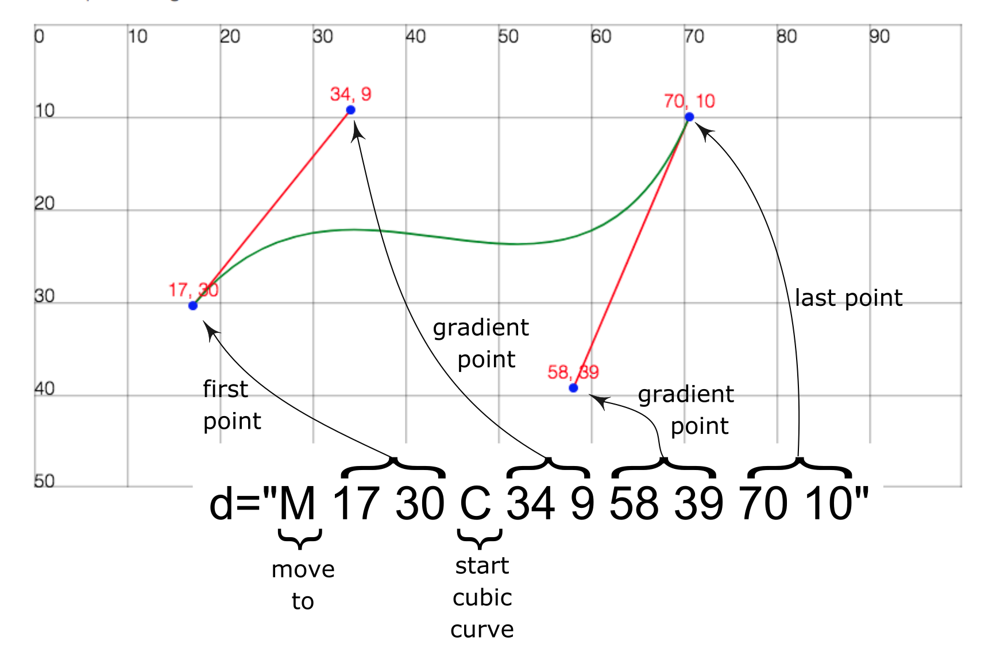

Drag the blue node points on the interactive svg canvas below to see how the path definition for this cubic curve path changes.
Paths and Curves
A path tag in svg results in a line being drawn. Path tags include attributes to set the line colour and width and a single definition attribute containing a list of instruction that define the line. The path definition is a linear stream of letter-character action values, each followed by numerical values that specify a point on the canvas.

Figure: Image showing a cubic path definition (d) and the points to which each value correspond
Notes
Numerical values in path definitions are user units, not pixels etc.
The example shown uses absolute coordinate references (upper-case commands)
Relative coordinates would be specified with lower-case command letters
The M command character defines the starting position for any following command
In this definition, the next command character C specifies that a Cubic curve follows
Cubic curve definitions include two gradient points (these are not usually visible)
The first gradient point determines the curvature from the preceding point
The second gradient point determines the curvature to the following point